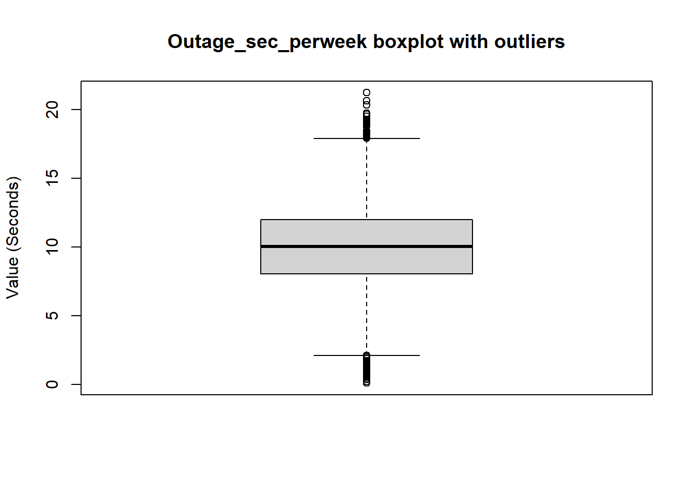
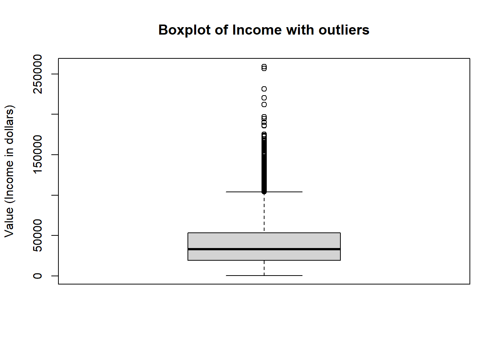
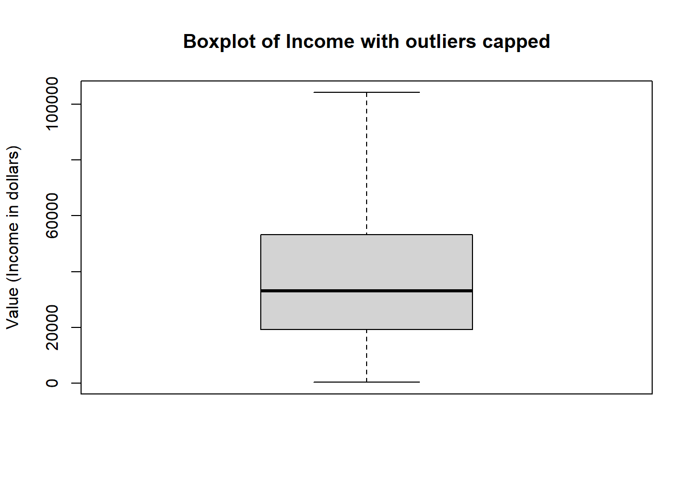
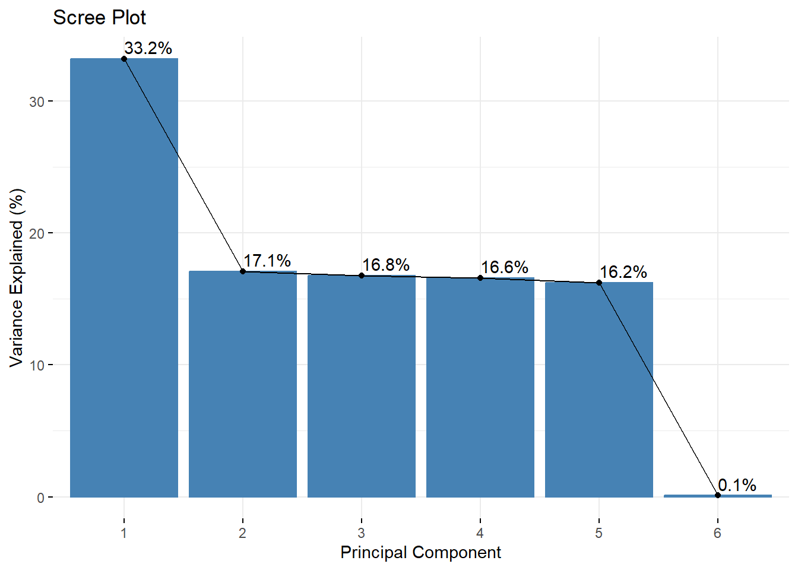
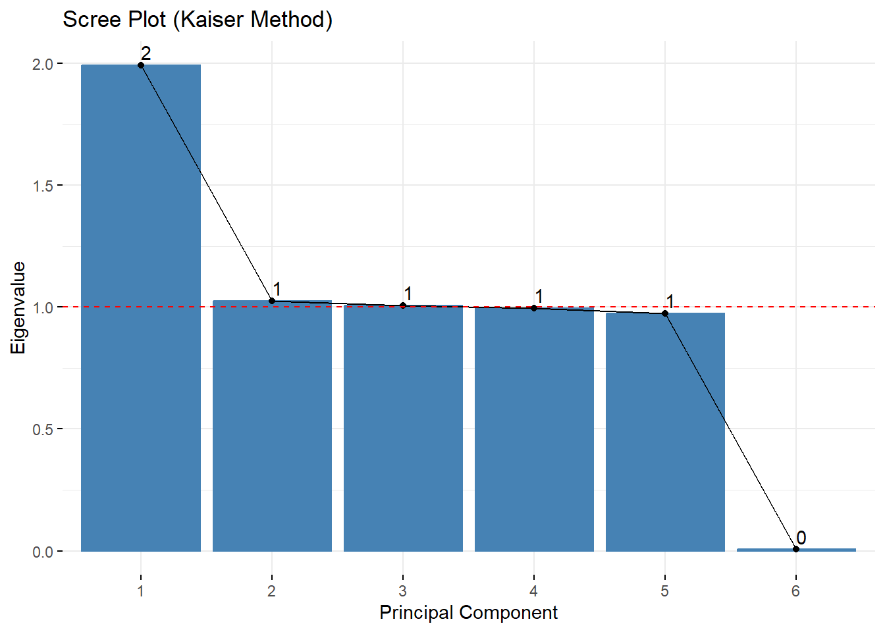

print(names(churn))[1] "Age" "Income" "Outage_sec_perweek"
[4] "Tenure" "MonthlyCharge" "Bandwidth_GB_Year" Part I: Research Question
A1. I want to see if I can use PCA to determine which factors are the highest contributors to customer churn.
A2. My goal is to identify and prioritize the most significant factors that are contributing to customer churn by using PCA as a dimension reduction technique, while retaining the factors that explain the most variance in the data.
Part II: Method Justification
B1. PCA analyzes the data by reducing the features into a smaller set of ‘principal components’ that are ordered by the variance they explain. PCA helps to reduce the dimensionality while maintaining as much variance or patterns as possible while simplifying the dataset (Lever et al., 2017). It does this by calculating the covariance between variables before comparing the covariance between difference variables in the da
B2. One of the major assumptions of PCA is that the data is continuous numerical data (Thaddeus, 2019). This is because PCA relies on calculating the covariance between variables and categorical variables do not have a numerical distance.
Part III: Data Preparation
C1. The continuous variables I will be using are listed below:
print(names(churn))[1] "Age" "Income" "Outage_sec_perweek"
[4] "Tenure" "MonthlyCharge" "Bandwidth_GB_Year" As mentioned above, it is important that the variables are continuous. I’ve included Age in the variables I’ll be using because a person’s age is continonus, but here in the dataset it is recorded as a discrete variable.
I checked for outliers in all the variables listed above and found outliers in Outage_sec_perweek, and Income. Outage_sec_perweek only had 43 values that were outliers and they did not appear to be so extreme that they needed to be removed and therefore they were retained.

Income had more ‘significant’ outliers.

I chose to cap the income values at the value of the upper whisker using the pmin() function. The mean of income is $39,806.93 and the Max is $258,900.70 so imputing the mean would distort the actual incomes so much that this data would not be able to be used accurately in some of the clustering models. Removing the outliers was another option since there were only 336 outliers in the 10,000 row dataset. However, removing these rows excludes the high earning customers from any clustering or regression analysis. Because of this, I chose to just cap the highest earning incomes at the value of the upper whisker, $104,166.70
Income after using pmin()

C2. The cleaned CSV file will be included in the submission files and will be named ‘CLEANED_churn.csv’. The dataset was scaled and saved as a data frame called ‘scaled_churn’.
# Standardize the variables into a new dataframe
scaled_churn <- as.data.frame(scale(churn))
head(scaled_churn) Age Income Outage_sec_perweek Tenure MonthlyCharge
1 0.7208892 -0.40829732 -0.6799436 -1.0486938 -0.003942362
2 -1.2598942 -0.67648638 0.5703026 -1.2619381 1.630244379
3 -0.1487230 -1.14953527 0.2523344 -0.7099043 -0.295210056
4 -0.2453466 -0.78519548 1.6504233 -0.6594910 -1.226459744
5 1.4455660 0.04195017 -0.6231249 -1.2424891 -0.528059300
6 1.4455660 -0.63911907 -0.5311979 -1.0409231 0.288355463
Bandwidth_GB_Year
1 -1.1384301
2 -1.1858165
3 -0.6121071
4 -0.5618291
5 -1.4281131
6 -1.0767351Part IV: Analysis
D1. In PC1 the greatest contributors are Tenure and Bandwidth_GB_Year. PC2’s greatest contributors are Outage_sec_perweek and MonthlyCharge. PC3’s single greatest contributor is Age. The first two principal components explain 50.31% of variance and 67.08 for the first three components.
#Loading Matrix
print(pca$rotation) PC1 PC2 PC3 PC4
Age -0.001973296 -0.090901771 0.899913648 0.0046938480
Income -0.001212034 0.404812205 -0.040989021 0.8987841860
Outage_sec_perweek -0.005870177 -0.641660666 -0.374029108 0.1536067997
Tenure -0.705863063 0.039898143 0.001524399 -0.0271746996
MonthlyCharge -0.040773650 -0.643846956 0.219981478 0.4096718024
Bandwidth_GB_Year -0.707145688 0.002184496 -0.013541712 0.0006752269
PC5 PC6
Age 0.42583671 -0.0230101507
Income 0.16318990 0.0012460947
Outage_sec_perweek 0.65172407 -0.0002254553
Tenure 0.04044808 0.7055413805
MonthlyCharge -0.60456450 0.0455799257
Bandwidth_GB_Year -0.01239395 -0.7068258344# Summary and loadings
summary(pca)Importance of components:
PC1 PC2 PC3 PC4 PC5 PC6
Standard deviation 1.4118 1.0127 1.0032 0.9978 0.9866 0.07701
Proportion of Variance 0.3322 0.1709 0.1677 0.1659 0.1622 0.00099
Cumulative Proportion 0.3322 0.5031 0.6708 0.8368 0.9990 1.00000D2. Initially I opted to use the elbow method with a scree plot. The elbow below shows that the cutoff should be at 2 principal components accounting for 50.31% of the variance.

The kaiser method suggested that the first three Principal Components are kept due to the these having an eigenvalue above 1 (Statistics Easily 2023). Retaining the first three principal components results in a model that accounts for 67.08% of the variance. Therefore I will be using the kaiser method for the remainder of this analysis.

Eigenvalues: 1.993176 1.025507 1.006355 0.9956913 0.9733402 0.005930071Number of components to keep: 3 PC1 PC2 PC3
Age -0.001973296 -0.090901771 0.899913648
Income -0.001212034 0.404812205 -0.040989021
Outage_sec_perweek -0.005870177 -0.641660666 -0.374029108
Tenure -0.705863063 0.039898143 0.001524399
MonthlyCharge -0.040773650 -0.643846956 0.219981478
Bandwidth_GB_Year -0.707145688 0.002184496 -0.013541712D3. PC1 explains 33.22% of variance. PC2 explains 17.09% of variance. And PC3 explains 16.77% of variance.
[1] 0.3321961 0.1709179 0.1677258D4. The first three principal components, recomended by the kaiser method, capture a total explained variance (cumulative proportion) of 67.08% or 0.6708397.
PC1 PC2 PC3
Standard deviation 1.411799 1.012673 1.003172
Proportion of Variance 0.332200 0.170920 0.167730
Cumulative Proportion 0.332200 0.503110 0.6708405. This PCA analysis reduced the original six principal components to three components while maintaining 67.08% of the original variance. PC1 is mainly influenced by Tenure and Bandwidth_GB_Year, PC2 by Outage_sec_perweek and MonthlyCharge, and PC3 by Age. While the elbow method suggested keeping two components, accounting for 50.31% of variance, the Kaiser method recommended three components with eigenvalues above 1. Therefore the Kaiser method was chosen for its high explained variance and better representation of the data.
Part V: Attachments
E-F. Sources:
Lever, J., Krzywinski, M., & Altman, N. (2017). Principal component analysis. Nature Methods, 14(7), 641-642. https://www.nature.com/articles/nmeth.4346
Statistics Easily. (2023). What is Kaiser criterion? Detailed explanation. https://statisticseasily.com/glossario/what-is-kaiser-criterion-detailed-explanation/
Thaddeus. (2019, August 31). When to use principal component analysis. Crunching the Data. https://www.crunchingnumbers.live/2019/08/31/when-to-use-principal-component-analysis/